2017년부터 쌓아 온 돌봄 경험
오랜 시간 한자리에서 다양한 어르신을 모셔온 경험과 체계적인 돌봄 시스템을 바탕으로, 세심한 맞춤형 케어를 제공합니다. 요양보호사의 절반 이상이 5년 이상 신효와 함께하고 있으며, 다양한 어르신을 모셔온 경험을 바탕으로 어르신별 생활 습관과 특성을 이해하고 안정적인 돌봄을 이어갑니다.
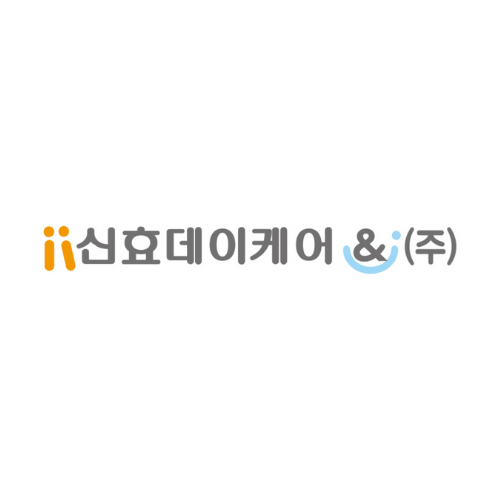
신효데이케어센터
안심토탈케어로 어르신의 행복한 노후생활을 지켜주는 든든한 파트너
센터의 시설과 이용 절차를 살펴보고, 어르신에게 필요한 돌봄을 함께 상담해 보세요.
돌봄부터 건강관리까지, 어르신의 매일을 책임지는 안심토탈케어
01 / 센터 소개
어르신의 안전을 최우선으로 설계한 따뜻한 안심케어 시설을 둘러보세요.
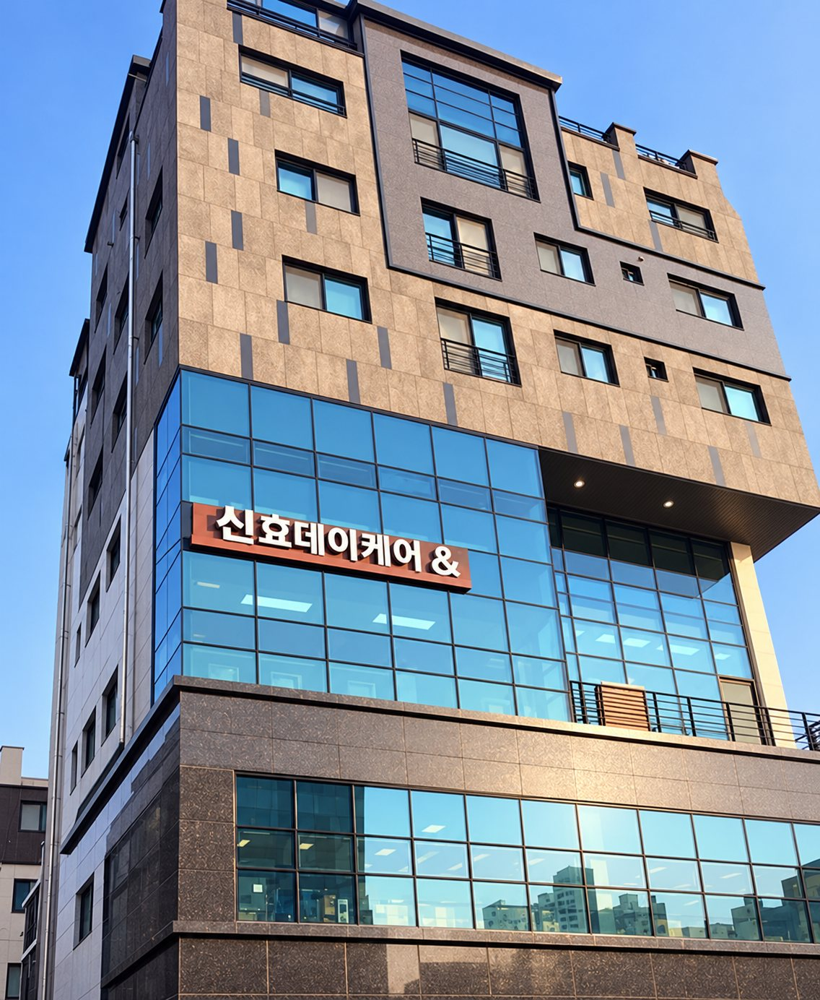
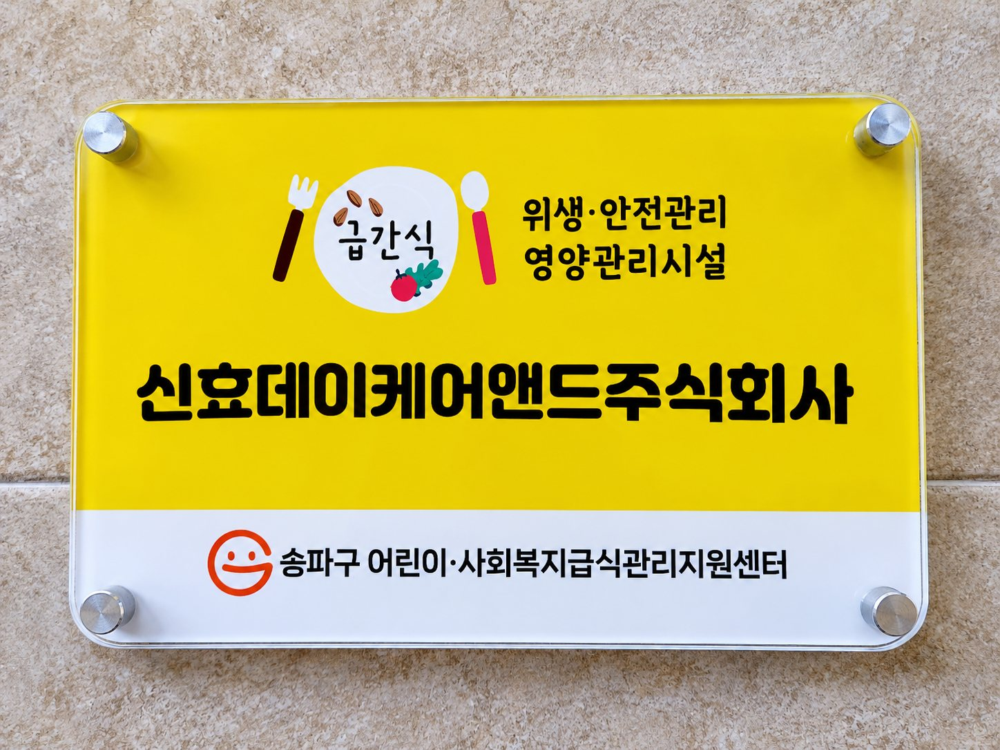
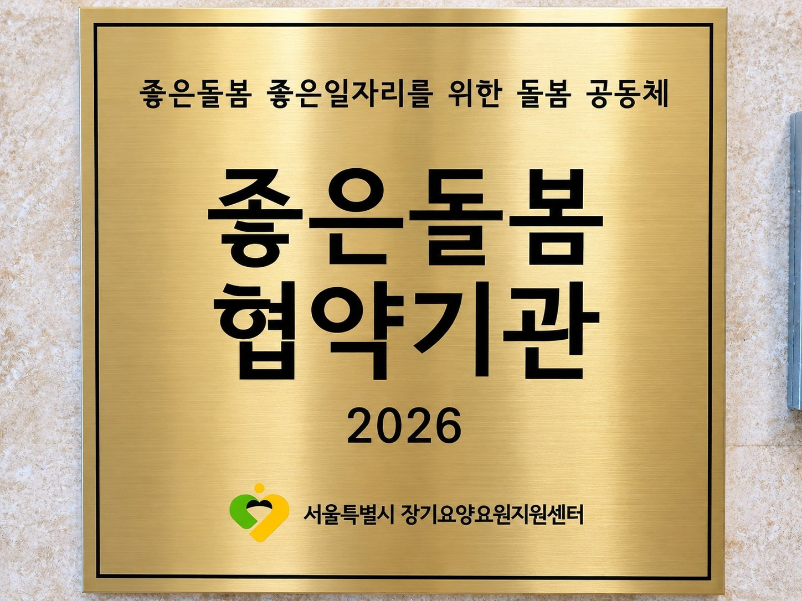
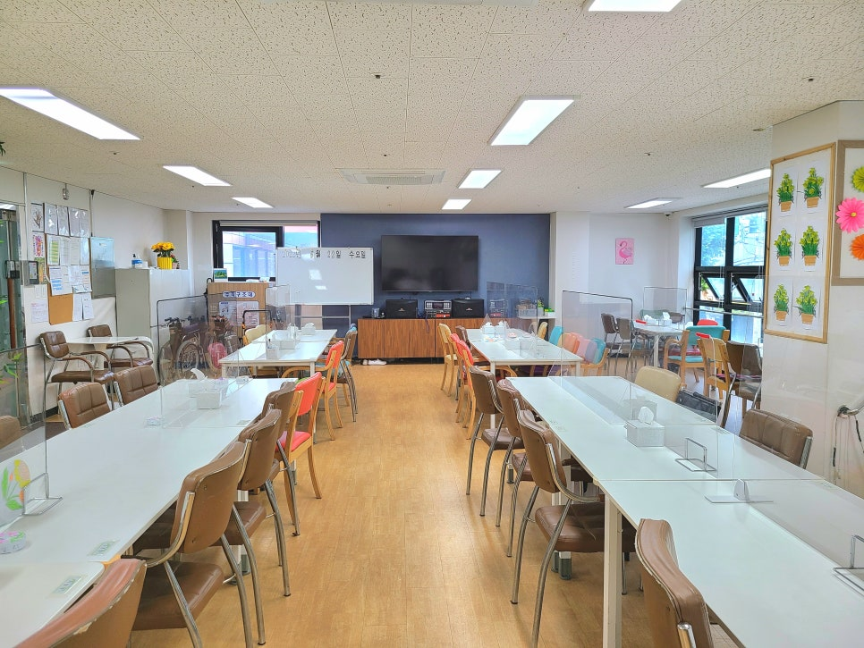
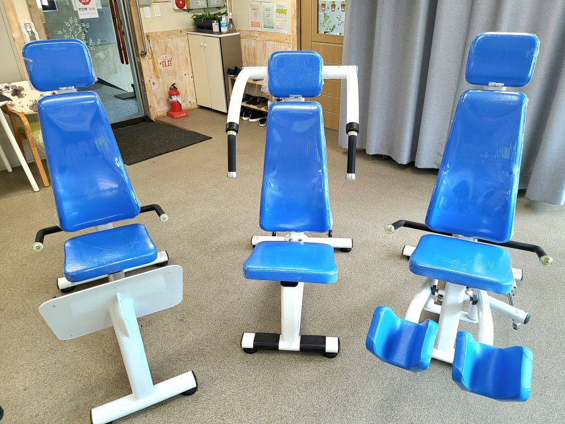
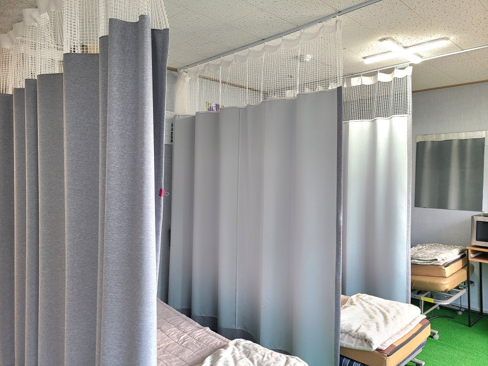
2017년부터 신효데이케어센터는 어르신 한 분 한 분이
소중한 삶의 주인공으로 빛날 수 있도록 곁을 지켜왔습니다.
정든 집과 익숙한 동네에서 가족과 함께 일상의 기쁨을 계속 누리실 수 있도록,
신체·인지·정서·사회적 돌봄이 하나로 이어지는 ‘안심토탈케어’를 제공합니다.
어르신에겐 따뜻한 웃음이 가득한 두 번째 집이 되고,
보호자에겐 마음 깊이 안심이 되는 든든한 파트너가 되어드리겠습니다.
신효의 약속
어르신의 오늘을 세심하게 살피고, 내일의 일상까지 함께 준비합니다.
오랜 시간 한자리에서 다양한 어르신을 모셔온 경험과 체계적인 돌봄 시스템을 바탕으로, 세심한 맞춤형 케어를 제공합니다. 요양보호사의 절반 이상이 5년 이상 신효와 함께하고 있으며, 다양한 어르신을 모셔온 경험을 바탕으로 어르신별 생활 습관과 특성을 이해하고 안정적인 돌봄을 이어갑니다.
어르신 스스로 일상을 이어갈 수 있는 힘을 기르도록, 신체·인지 기능의 유지와 향상에 초점을 맞춘 프로그램을 제공합니다. 한 분 한 분의 상태와 능력에 맞춘 활동으로 기능 저하를 예방하고 자립적인 생활을 도우며, 보호자의 돌봄 부담도 덜어드립니다.
어르신의 사회화를 돕고 유지하기 위하여 야외나들이, 맛집탐방, 신효장터 등 만족도가 높은 프로그램들을 지속적으로 운영합니다.
송파구 병원 방문 시, 신효와 동행하여 간단한 진료를 받을 수 있는 서비스 운영(별도 상담 필요)
어르신들께서 선호하시고 건강도 챙기는 반찬을 풍성하게 제공해드리며, 건강과 맛을 함께 지켜드리는 식사 운영
주 2회 물리치료사와 함께 하는 어르신들의 건강 관리시간과 낙상 위험관리가 필요한 어르신들 대상의 낙상 예방교육 및 운동관리
02 / 이용안내
이용 대상과 일정, 비용은 어르신의 상황과 센터 운영 기준을 확인한 뒤 안내합니다.
희망 이용 요일, 대략적인 거주지, 어르신 인지/건강상태, 주요질환, 복용약 등
서류 4가지 확인 및 희망 일정을 상담하고 입소절차를 자세히 설명드립니다.
신효를 미리 방문하시어 시설과 제공 서비스를 살펴보시고, 필요시 어르신께서 체험하실 수 있도록 상담드립니다.
방문상담 후 최종 결정을 하시면 입소계약 후 어르신께서 센터를 이용하게 되십니다.
아래에서 센터가 제공한 2026년도 5등급 이용요금 안내를 확인하실 수 있습니다. 실제 비용은 장기요양등급, 이용시간·일수, 본인부담률 및 식사 이용에 따라 달라지므로 상담 시 확인해 주세요.
이용요금 안내 이미지 보기 ↓일반 본인부담률 15% 기준의 예시입니다. 다른 등급과 개인별 적용 금액은 센터에 문의해 주세요.
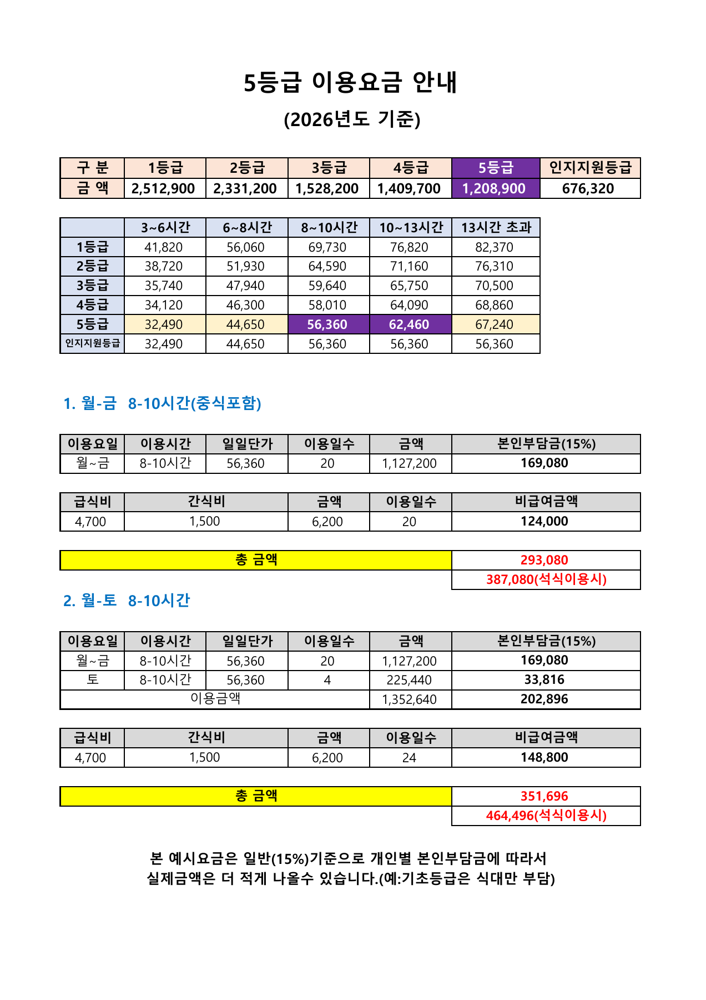
이미지를 누르면 크게 볼 수 있습니다. 센터 제공 자료 원문을 그대로 반영했습니다.
이용요금 PDF 원문 보기 ↗03 / 프로그램
인지·신체·정서·사회적 활동을 함께합니다.
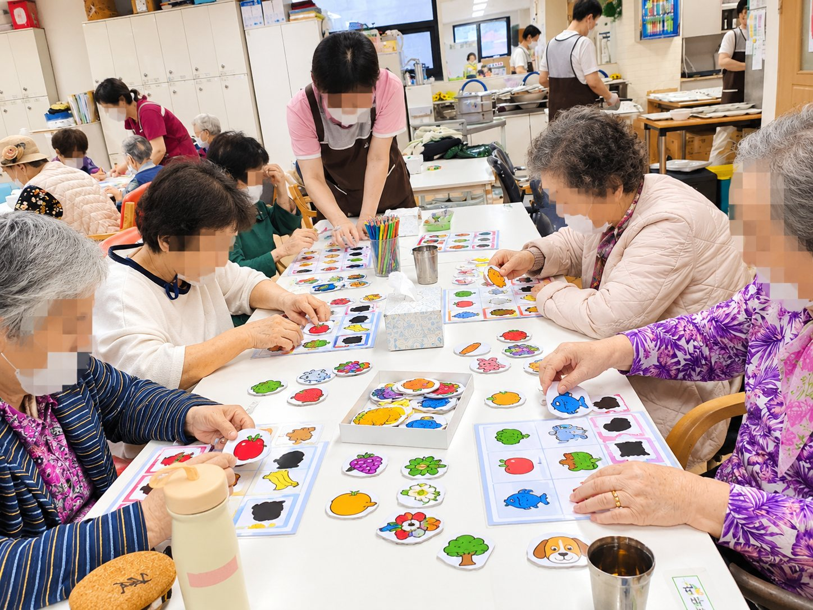
그림 맞추기와 놀이 등으로 참여하는 즐거움을 나눕니다.
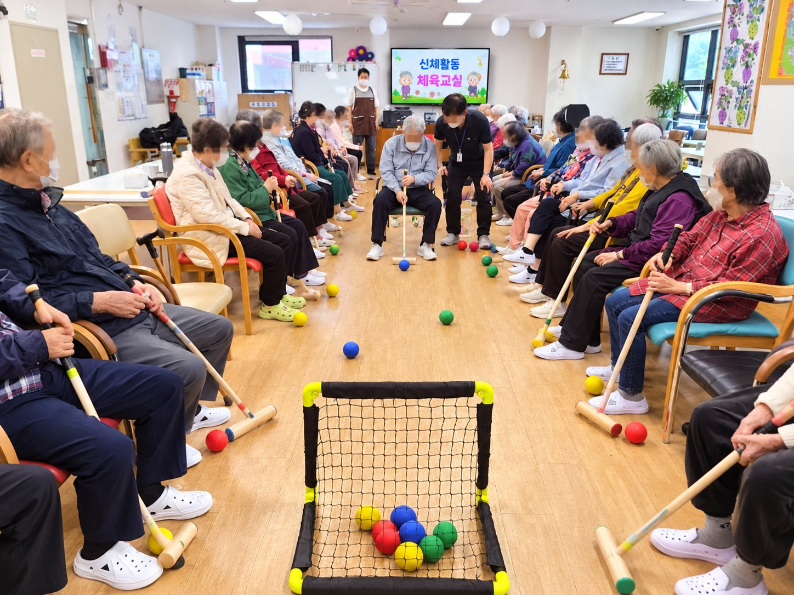
어르신의 상태에 맞춰 몸을 움직이고 함께 활동합니다.
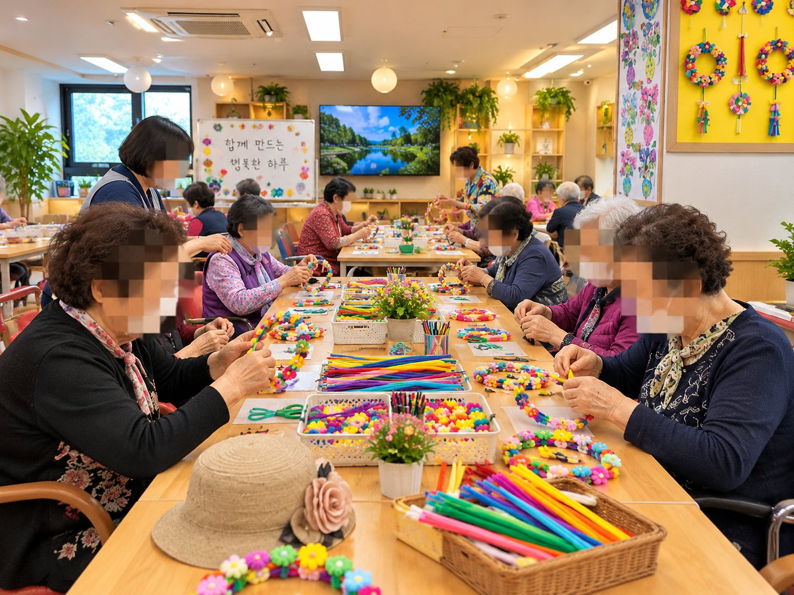
손으로 만들고 표현하며 일상에 성취감을 더합니다.
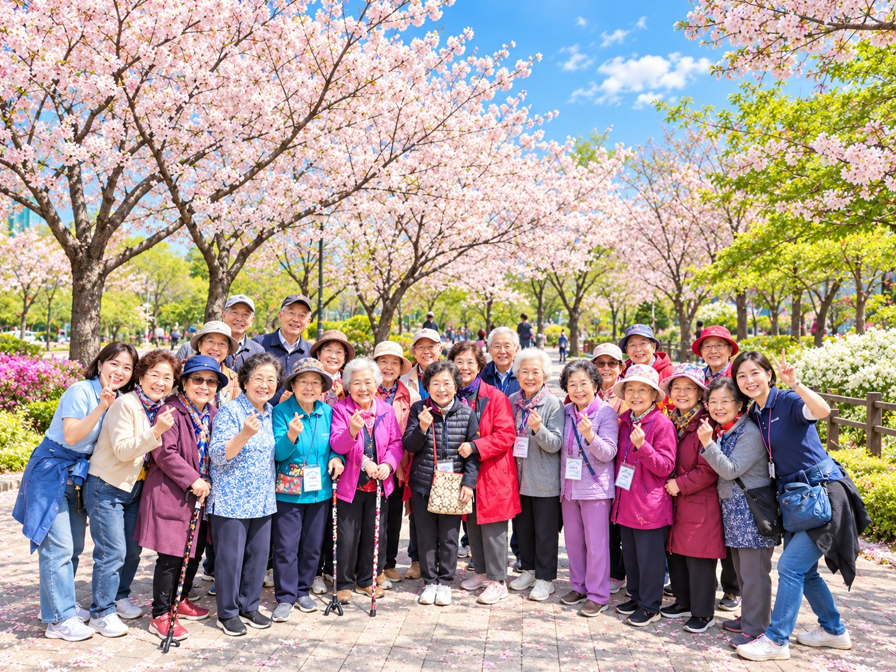
계절을 느끼며 센터 밖에서도 함께하는 시간을 갖습니다.
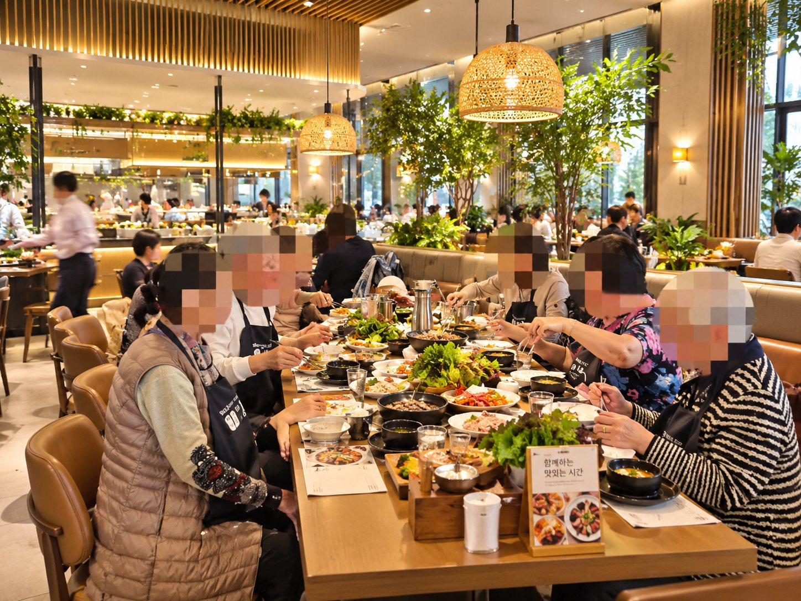
지역사회에서 식사와 만남을 나누는 활동입니다.
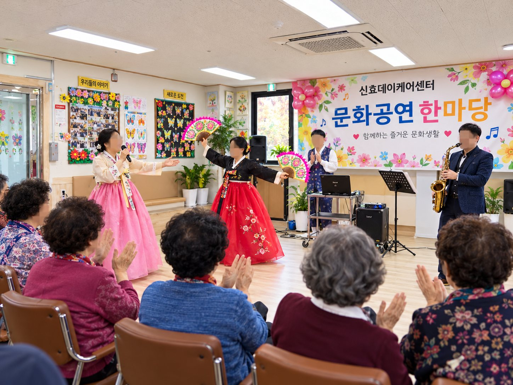
음악과 공연을 즐기며 정서적 교류를 나눕니다.
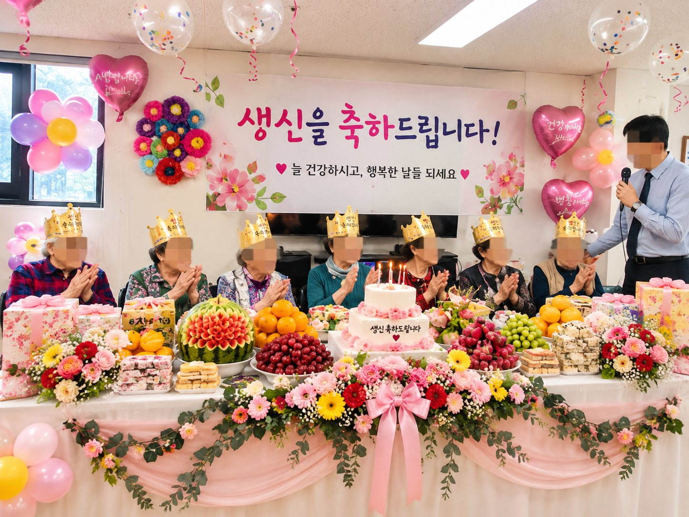
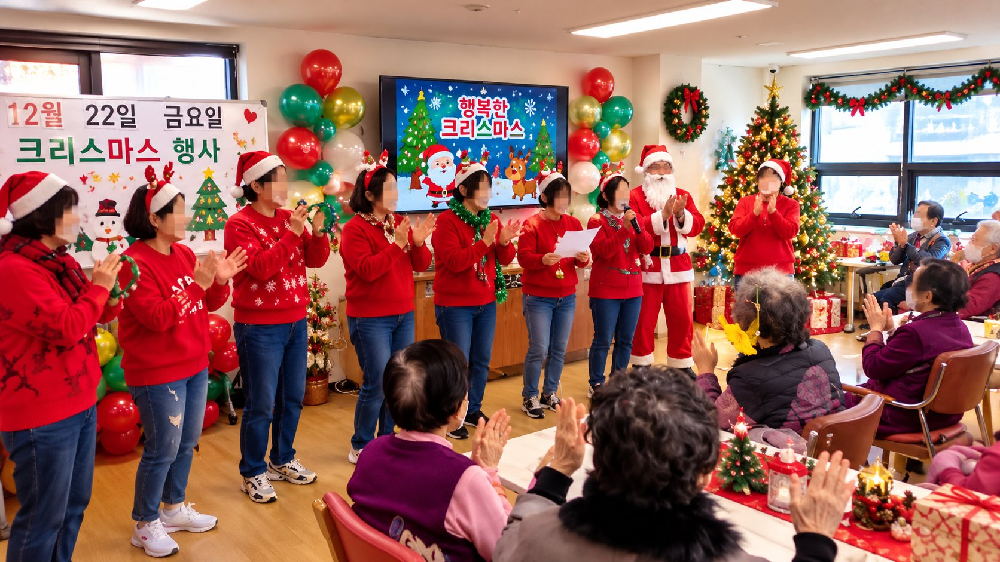
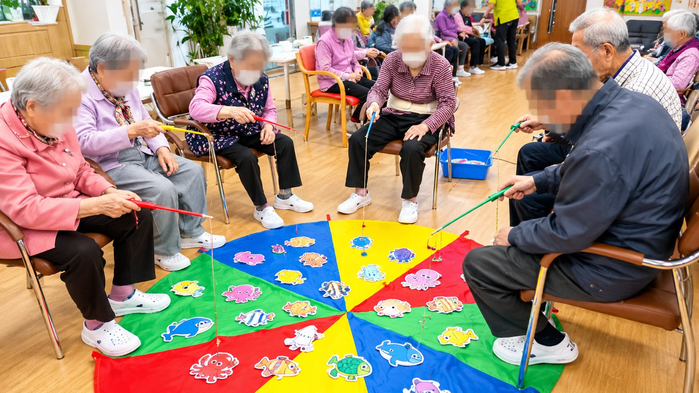
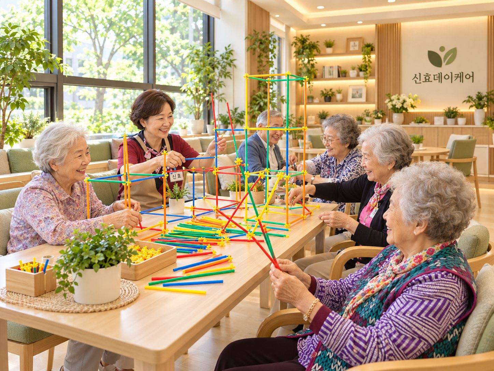
04 / 자주 묻는 질문
장기요양보험공단에서 정한 기준에 따라, 어르신의 상태 및 지역, 희망 이용일정 등에 따라 실제 이용 가능여부가 달라집니다.
초기 상담은 가능하나, 등급판정(통보예정)자를 제외한 어르신은 이용이 불가합니다.
송파구 전 지역 및 강남구·강동구·하남시 인근 지역에 차량 운행을 안내합니다. 실제 이용 가능한 노선·시간은 거주지에 따라 상담 시 확인해 주세요.
2026년도 5등급 이용요금 안내를 참고해 주세요. 일반 본인부담률 15% 기준의 예시이며, 실제 적용 금액은 등급·이용시간·일수·본인부담률과 식사 이용에 따라 달라집니다. 개인별 금액은 전화 상담으로 확인하실 수 있습니다.
최초 상담시에는 어르신의 요양 등급과 타 요양서비스 이용내용 등을 알고 계시면 기본적인 상담이 가능합니다.
05 / 오시는 길·상담
서울특별시 송파구 가락로 45, 3층
지도를 끌어서 주변을 살펴보고 +/−로 확대·축소할 수 있습니다. 건물 내 3층 위치와 출입구는 방문 전 확인해 주세요.
네이버 지도로 길찾기 ↗ 카카오맵 길찾기 ↗방문 전 상담 가능 시간을 확인해 주세요.